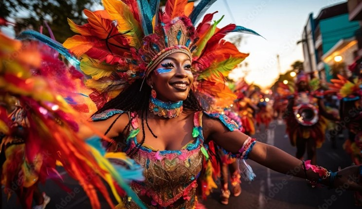
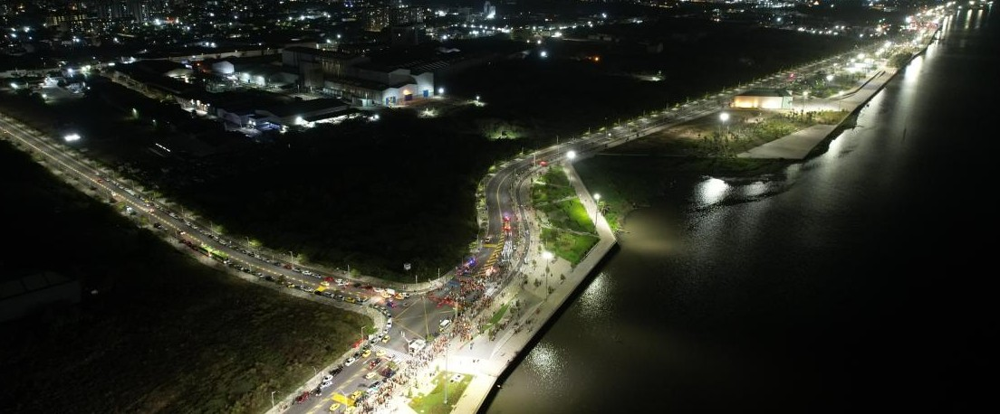
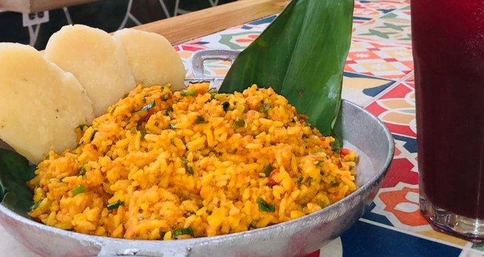
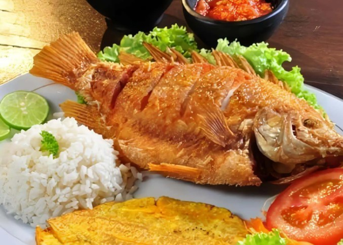
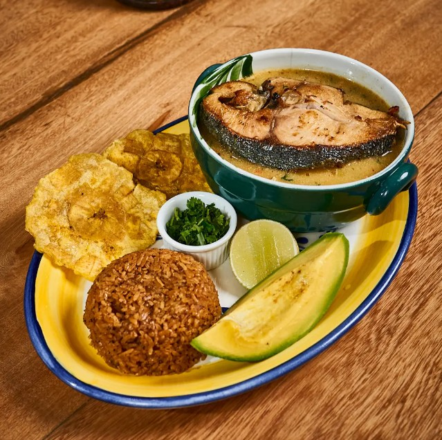

Barranquilla es conocida por ser la casa del famoso Carnaval de Barranquilla, una de las celebraciones culturales más importantes de Colombia y del mundo, llena de música, color, danza y tradición.

La ciudad está ubicada cerca del río Magdalena, uno de los más importantes del país, lo que ha influido en su desarrollo económico y cultural a lo largo de la historia.
Barranquilla también es reconocida por ser una de las ciudades más alegres de Colombia. Su gente es cálida, amable y siempre está dispuesta a celebrar la vida con entusiasmo.
Conoce más sobre Barranquilla Ver gastronomíaAdemás, cuenta con un clima cálido durante todo el año, lo que la convierte en un destino ideal para quienes disfrutan del sol y los ambientes tropicales.
| Lugar | Ubicación | Características |
|---|---|---|
| Gran Malecón del Río | A orillas del río Magdalena | Espacio moderno para caminar, comer y disfrutar del paisaje. |
| Ventana al Mundo | Vía 40 | Monumento colorido símbolo de la ciudad. |
| Zoológico de Barranquilla | Barrio El Prado | Espacio natural con gran variedad de especies. |
El Gran Malecón del Río es uno de los espacios turísticos más importantes de la ciudad, ubicado a orillas del río Magdalena. Este moderno lugar combina naturaleza, recreación y desarrollo urbano, ofreciendo amplias zonas para caminar, descansar y disfrutar del paisaje. Este sitio brinda una experiencia agradable para compartir en familia o con amigos, con restaurantes, áreas verdes y actividades al aire libre, convirtiéndose en un punto imperdible para quienes desean conocer el ambiente vibrante y acogedor de Barranquilla.

Barranquilla es famosa por su gastronomía caribeña, llena de sabor y frescura. Entre sus platos más representativos se encuentran el arroz de lisa, la mojarra frita, el sancocho de pescado y las arepas de huevo.

Arroz Lisa

Mojarra Frita

Sancocho de pescado
Arepa de huevo